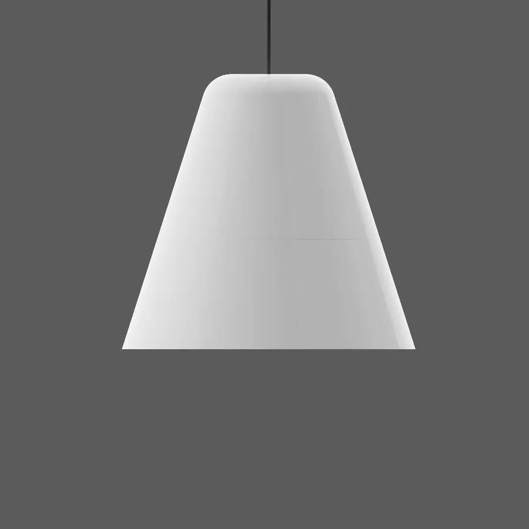
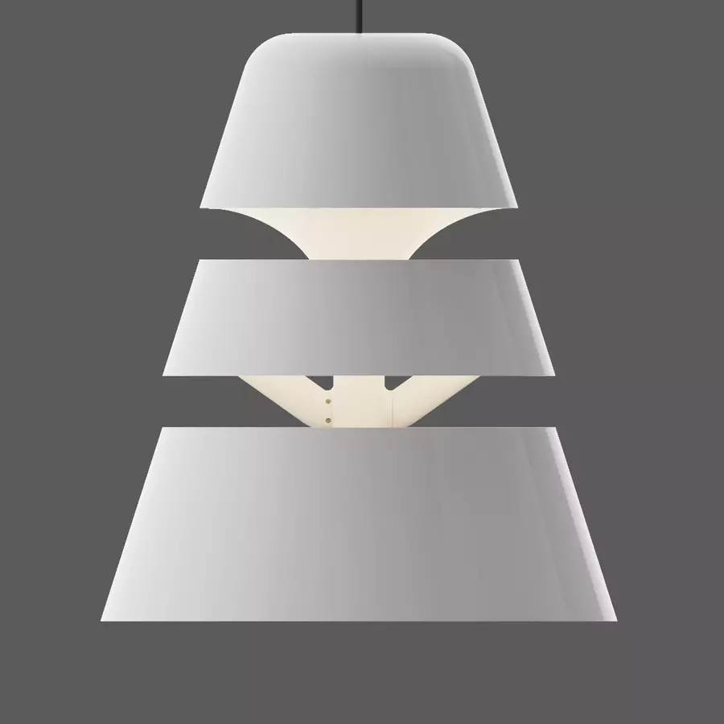
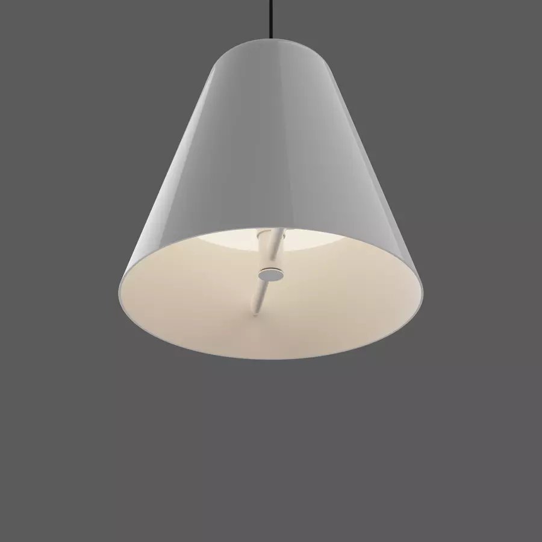
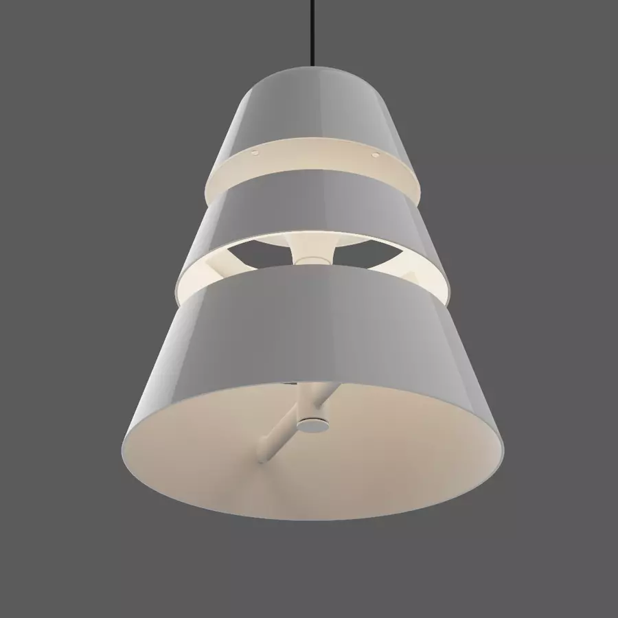
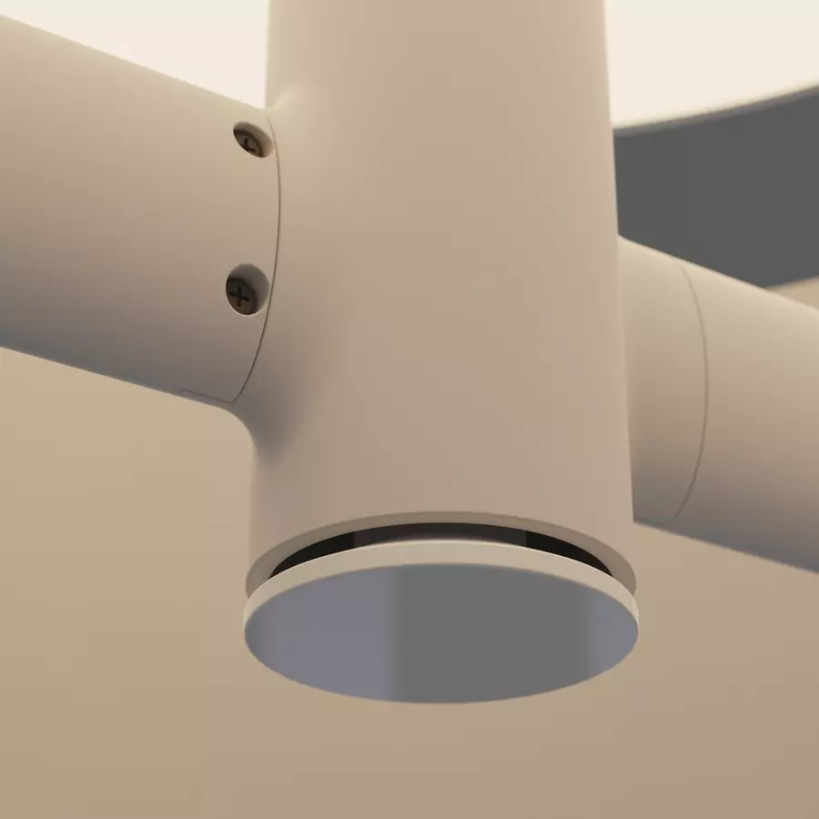
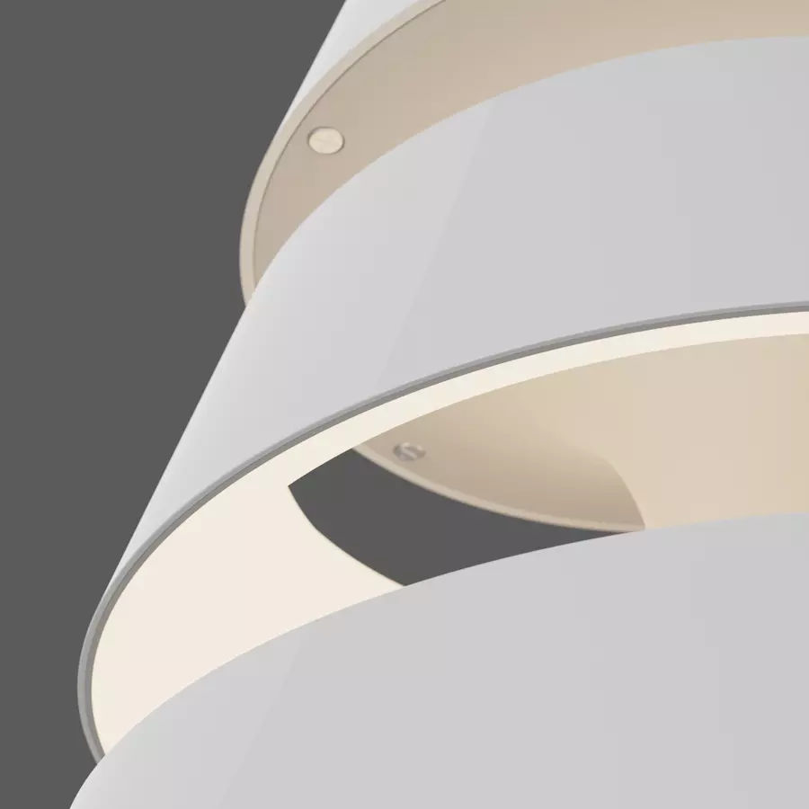
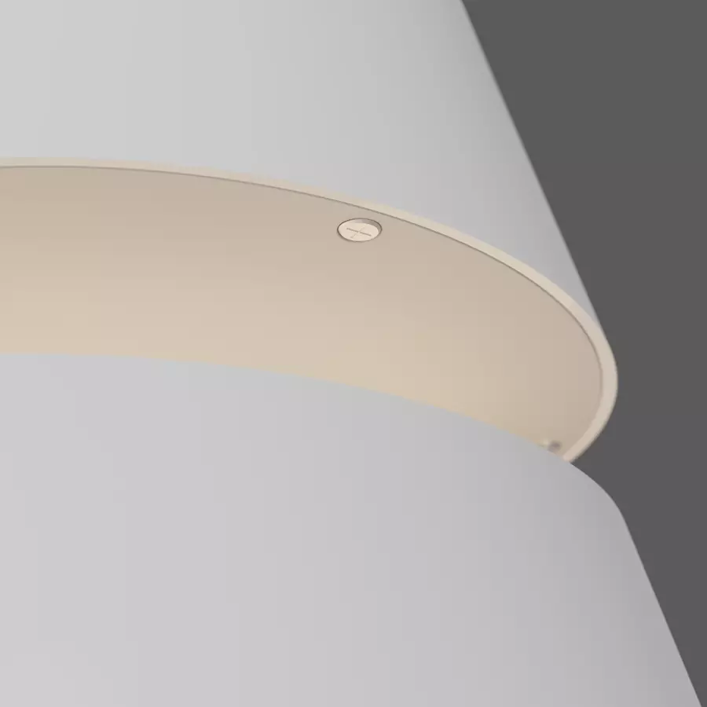
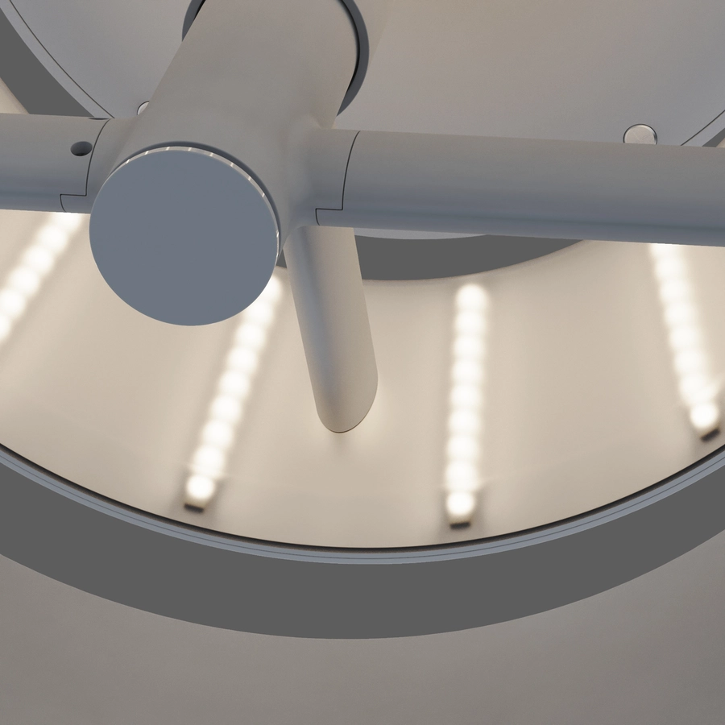
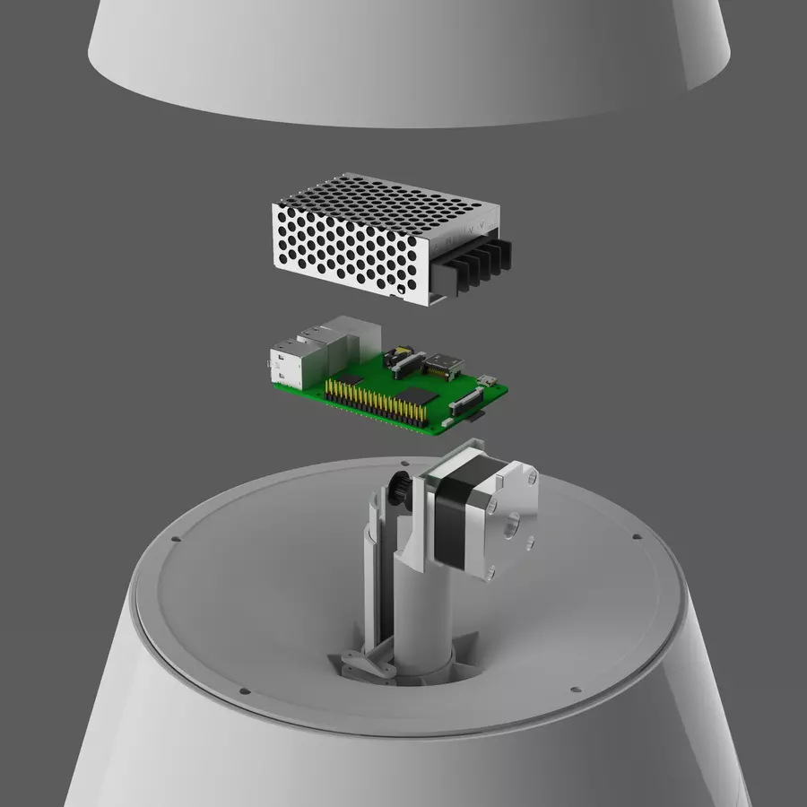
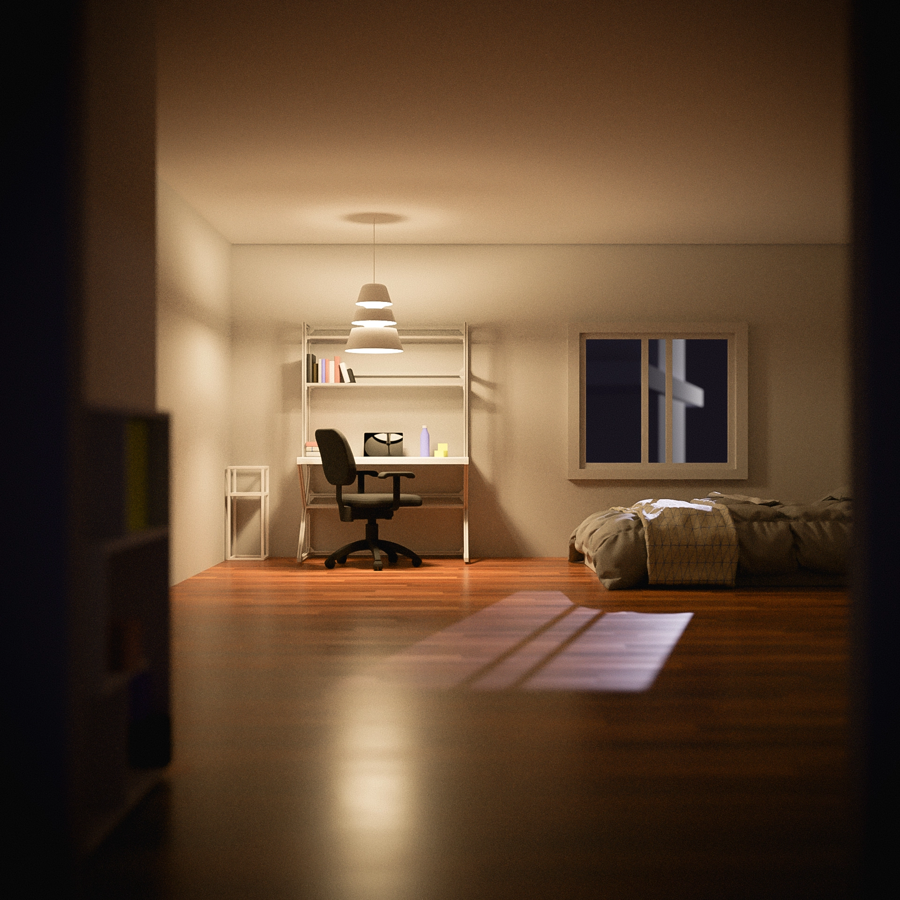

Sora Lamp
This is a pendant lamp concept that was developed for my final year major project. Using a 'research-through-design' approach, this project demonstrated that the lighting in our living situation can have profound effects on mental health and wellbeing. Due to the academic nature of the project, an ../imgve review of the literature on the effects of lighting and its qualities on productivity and mental health was conducted. The findings from that research was then applied to the product design process, leading to a product concept that is informed by rigorous research.
 The concept uses the idea of changing form that corresponds with changing function as its design intervention.
When the lamp is closed, it focuses light downward for tasks requiring intense focus. Research showed that workers who were operating machinery or working with minute objects benefited from as much as three times the average household lux levels. It has also been shown that bright, white light in the morning helps maintain a healthy circadian rhythm.
When the lamp is opened it results in more diffuse lighting. This can be used as mood lighting, especially in the evening when it is shown that low lux and lack of short-wavelength light benefits our sleep.
    The lamp concept uses a multitude of WS2812 addressable RGB LED strips that will allow the user to select any colour or combination of colours that they want. The advantage of addressable RGB LEDs are that they allow minute, individual control over every LED. This opens up the opportunity to design devices that are capable of highly disparate and textured lighting.
It was also designed to have Internet of Things (IoT) interactivity. IoT technology has quickly become a familiar staple in many homes, and is a rapidly expanding market. The ability for the user to programmatically change the function of the lamp transforms the role of the lamp from just a lighting product to something that can play an active part in improving our lives.
